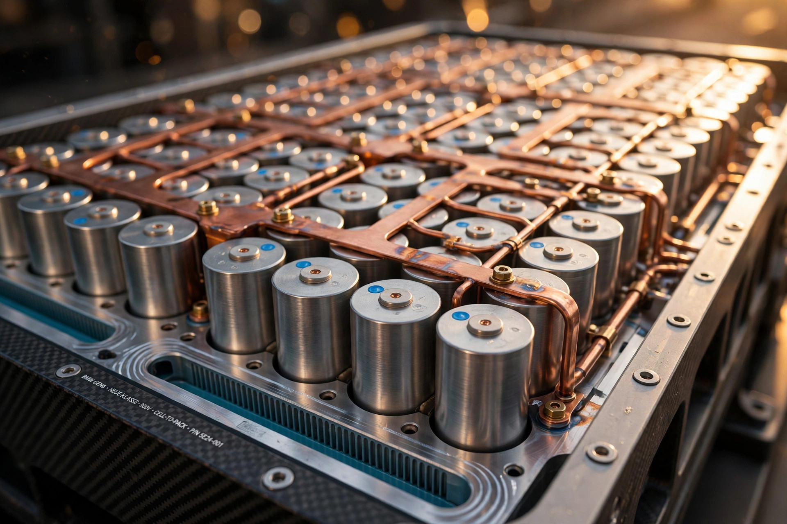

Cars / Electric Propulsion
One Brain, Cylindrical Cells, and 805 Kilometres
BMW started selling the Neue Klasse iX3 in the United States on September 25, 2026. Underneath sits a sixth-generation electric drive system built around cylindrical battery cells, an 800-volt architecture, and a single central computer called the Heart of Joy. It is the most consequential BMW in a decade, and the interesting parts are the ones you cannot see.

BMW started selling the iX3 in the United States on September 25, 2026, and the car arriving at dealers is the most consequential BMW in a decade. Not because it is fast, though 469 horsepower and a 4.9-second sprint to 100 km/h are respectable for a family SUV. Not because of the range figure, though 805 kilometres on the WLTP cycle is a number that would have sounded like a typo five years ago. What matters is what sits underneath: a sixth-generation electric drive system built around cylindrical battery cells, an 800-volt architecture, and a single central computer that BMW calls the Heart of Joy.
Neue Klasse is not a marketing label BMW chose lightly. In the 1960s, the original Neue Klasse sedans pulled BMW back from the edge of bankruptcy and established the template every BMW since has followed: compact dimensions, a driver-focused cabin, an engine that liked to rev. Sixty years later, BMW is betting the same name on the opposite bet. This time the reset is not about an engine. It is about deleting the engine entirely and rebuilding everything around the battery, the software, and a single brain.
First drives from the international press launch in Spain and subsequent UK testing have been unusually warm. CAR magazine calls the iX3 the most important BMW for at least a decade. The Car Expert's media consensus puts it among the best electric SUVs on sale, with particular praise for driving feel and range. Australian first-drive testing recorded around four miles per kilowatt-hour on mixed roads. First drives are choreographed, and the iX3 has been on the road barely a month. But the hardware underneath deserves a closer look, because BMW made three engineering choices here that most rivals made differently.
The cell is the story
Start with the battery, because the battery is the platform. BMW's Gen6 system abandons the prismatic cells its fifth-generation EVs used and switches to large cylindrical cells, 46 millimetres in diameter and available in two heights: 95 millimetres for low sedans, 120 millimetres for SUVs like the iX3. Round cells in a rectangular world sounds like a packaging compromise, and in one sense it is. Cylinders leave voids that prisms do not. BMW's answer is to delete the modules entirely. Cells go straight into the pack, a layout BMW calls cell-to-pack, and the pack itself becomes a structural member of the body, which BMW calls pack-to-open-body.
That sequence matters more than the cell shape. In Gen5 cars, cells sat inside modules, modules sat inside a pack, and the pack bolted underneath a body that carried its own structure. Every layer added weight, fasteners, and dead space. Gen6 collapses the stack: fewer parts, fewer interfaces, and the battery housing carries crash and torsional loads that the body structure used to carry alone. BMW claims the new cells hold about 20 percent more energy per unit volume than the prismatic cells they replace, with charging speed and range up by about 30 percent each. Those are BMW's numbers, not independent measurements. Still, the direction is unambiguous: a bigger share of the car's mass is now doing structural work instead of merely being carried around.
Chemistry follows the same logic of subtraction. Gen6 cells use more nickel and less cobalt than their predecessors, with silicon added to the anode to lift energy density. Recycled cobalt, lithium, and nickel go into production, alongside renewable energy for electrode and cell manufacturing, and BMW puts the resulting carbon saving at roughly a third per kilowatt-hour of capacity. A less cobalt-dependent cell is also a cell whose supply chain is less exposed to the countries that dominate cobalt refining. Nobody at BMW frames it that way in public. Supply security is the quiet benefit of every chemistry decision in this industry.
Numbers on the iX3 50 xDrive, the only version on sale so far: 113.4 kWh gross, 108.7 kWh usable. Nominal system voltage is 800 volts, with the pack's actual working voltage reported around 699 volts. Peak DC charging hits 400 kW at a suitable charger, taking the battery from 10 to 80 percent in 21 minutes and adding roughly 372 kilometres of range in ten minutes. A rear-drive iX3 40 with an 82.6 kWh pack and 637 kilometres of WLTP range joins the lineup in 2026, charging at up to 300 kW. Bidirectional charging comes as standard across the range.
One caveat belongs in any honest reading of those charging figures. A 400 kW peak is a property of the car and the charger together, and chargers that can actually deliver 400 kW to a single vehicle remain rare. How long the car holds its peak before tapering matters more than the peak itself, and BMW has not published a full curve. Until independent testers run the iX3 through a 10-to-80 session on a 400 kW dispenser and log the curve, 21 minutes is a claim with an asterisk, not a verified fact.
A heart, not a committee
Watchmakers have called the balance wheel the heart of a watch for centuries, because everything else in the movement answers to its rhythm. BMW chose the same metaphor for the iX3's central computer, and the parallel is closer than the marketing suggests. In a conventional car, drivetrain, braking, steering, and recuperation each run on separate control units that negotiate with each other over a network, like department heads passing memos. In the iX3, one computer called the Heart of Joy runs all four, processing sensor data in under a millisecond and, according to BMW, working up to ten times faster than the control units it replaces.
Latency is a driving-dynamics specification, not a software footnote. When a driver lifts off the accelerator at motorway speed, the car must decide how much deceleration comes from the motors and how much from the friction brakes, and it must decide before the driver notices the handover. Doing all of that inside one processor instead of across a network removes the negotiation delay entirely. BMW says 98 percent of braking events in the iX3 are handled by recuperation alone, which turns the friction brakes into a backup system and makes brake feel a software problem rather than a hydraulic one. A Soft Stop function smooths the final metre of a stop so the car does not rock on its suspension. Small thing. Drivers notice it every single time they stop.
Heart of Joy is one of four computers BMW calls superbrains, covering driving dynamics, automated driving, infotainment, and comfort functions between them. That consolidation is the quiet revolution of the Neue Klasse platform. Dozens of separate electronic control units, each with its own supplier, software stack, and update cycle, collapse into four machines BMW controls end to end. Over-the-air updates stop being a patchwork of supplier releases and become a single coherent software delivery. Whether BMW uses that control well is an open question that only years of updates will answer.
Panoramic Vision sits on top of the same computing stack. Instead of a traditional instrument cluster, the iX3 projects a band of information across the base of the windscreen, pillar to pillar, using three projection panels hidden in the dashboard. A 17.9-inch central touchscreen handles the rest, running BMW Operating System X. Early reviewers needed about an hour to acclimatise to the projected display, then rated it among the most useful interior innovations in any current car.
Motors without magnets
Rear axle first. BMW's Gen6 rear motor is an externally excited synchronous machine, which means the magnetic field in the rotor comes from a winding energised with direct current rather than from permanent magnets. No permanent magnets means no rare-earth materials in the rear motor at all, which is a supply-chain decision dressed as an engineering one. Rare-earth prices swing with geopolitics, and a motor that does not need them is a motor whose cost BMW can forecast.
Front axle gets a different machine entirely. All-wheel-drive Neue Klasse cars use an asynchronous motor up front, where the rotor's magnetic field is induced through the stator. Asynchronous machines are cheaper, robust, and easy to switch off when they are not needed, which makes them ideal as a secondary drive unit that only wakes up when traction demands it. In the iX3 50 xDrive, the rear motor contributes 240 kW and 435 Nm while the front adds 123 kW and 255 Nm, for a system total of 345 kW, 469 horsepower, and 645 Nm. Top speed is 210 km/h, and the 0 to 100 km/h sprint takes 4.9 seconds.
Two different motor technologies on two axles is not a compromise. It is a division of labour. One motor is tuned for efficiency and sustained output, the other for cheap, instant, on-demand traction. Tesla uses a similar split in its dual-motor cars, and the logic is identical: put the efficient machine where it works hardest, and the cheap, switchable machine where it works least. BMW's version goes one step further by removing rare earths from the hard-working motor too, which is the part its competitors have not matched.
What 805 kilometres actually means
Range figures deserve suspicion, and the iX3's headline number earns it. Up to 805 kilometres on the WLTP cycle translates to an EPA estimate closer to 400 miles, and real-world testing so far lands between those two poles. CAR magazine's UK efficiency route returned about 3.2 miles per kilowatt-hour, while its Spanish highway and mountain driving netted closer to four. On a 108.7 kWh usable pack, that spread is the difference between roughly 350 and 435 miles. What changed is the floor: even the pessimistic end of the range is more than most electric SUVs manage on their best day.
Weight and aero explain part of it. At 2,360 kilograms, the iX3 is no featherweight, yet it undercuts BMW's own iX by more than 200 kilograms despite carrying a larger battery. Drag coefficient is 0.24, respectable for a tall SUV and a figure BMW chased with flush door handles, an enclosed underbody, and a long, sloping roofline. A bigger share of the efficiency gain comes from places you cannot photograph: silicon-carbide inverters, a heat pump as standard, and the Gen6 motors' efficiency at motorway speeds.
Scale is the other half of the story. BMW took more than 50,000 European orders for the iX3 in the six months after its September 2025 unveiling, before most customers had driven one, and added a second production shift at the Debrecen plant in Hungary in March 2026. A third Gen6 battery plant entered mass production in Shenyang, China, on October 30, 2026, joining Debrecen and Irlbach-Straßkirchen in Germany. European production for the year is effectively sold out. None of that proves the car is good. It proves BMW's bet on a clean-sheet platform is the bet its customers wanted it to make.
The open questions
Every clean-sheet platform carries risks its maker cannot fully price on day one, and the iX3 has three worth naming. First is repair. A structural, cell-to-pack battery that doubles as body structure is harder to service after a crash than a bolt-in pack, and BMW has said little in public about how a damaged section gets repaired or replaced. If a minor collision writes off a battery, insurance costs follow, and the whole efficiency argument gets more expensive in the real world than it looks on a spec sheet.
Second is the software promise. Four superbrains and a single Heart of Joy make coherent updates possible, but they also concentrate failure modes. A bug in a federated system breaks one function. A bug in a centralised system can break several at once. BMW's record on software updates has improved steadily over the last decade, and Operating System X is the most polished interface the company has shipped. Still, the iX3 is the first car running this architecture at scale, and the first year of owner reports will tell us more about the platform than any launch review can.
Third is the one nobody at BMW will answer directly. A 469-horsepower family SUV is the opening move, not the endgame. An M60 xDrive with up to 400 kW charging is already provisionally listed, and the iX3 40 arrives in 2026. What matters more is what the platform does next: a Neue Klasse i3 sedan is already in production at Irlbach-Straßkirchen with a claimed 906 kilometres of WLTP range, and a long-wheelbase i3 50L built in China covered 1,213 kilometres on one charge in a BMW road test, albeit an uncertified one. If the iX3 is the proof of concept, the sedan range is where the architecture has to earn its name.
None of those questions diminish what BMW shipped. For most of the last decade, legacy carmakers built electric cars by converting combustion platforms and hoping the compromise would not show. BMW's first attempt at that approach, the original iX3, was a combustion X3 with a battery pressed underneath it. This car is the opposite. Every major system, cells, voltage, motors, computing, display, was designed for this platform and nothing else. Whether the gamble pays off over the next five years is unknowable today. But the engineering is honest, the numbers mostly check out, and the name on the boot is one BMW earned the right to reuse.
One more thing, said plainly: I have not driven this car. Everything above rests on BMW's published specifications, first-drive reporting from CAR, The Car Expert, CarsGuide, and others, and the company's own technical disclosures from its February 2025 Gen6 reveal. Where a figure comes from BMW alone, I have said so. Where independent testing exists, I have used it. That is the limit of what a launch-month analysis can honestly claim, and the iX3 will be a better story in a year, when owners, repair shops, and charging logs have had their say.
BMW iX3 50 xDrive: key figures
| Platform | Neue Klasse (NA5), first production model; Debrecen, Hungary |
|---|---|
| Battery | 113.4 kWh gross, 108.7 kWh usable; 46mm cylindrical cells (46120), cell-to-pack, pack-to-open-body structural |
| Voltage / charging | 800 V architecture; up to 400 kW DC peak; 10 to 80% in 21 min; ~372 km in 10 min (BMW test conditions) |
| Range | Up to 805 km WLTP; ~400 miles EPA estimate |
| Motors | Rear externally excited synchronous (240 kW, 435 Nm, no rare-earth magnets); front asynchronous (123 kW, 255 Nm) |
| System output | 345 kW (469 hp), 645 Nm; 0 to 100 km/h in 4.9 s; top speed 210 km/h |
| Computing | Four "superbrains"; Heart of Joy central computer for drivetrain, braking, recuperation, steering; 98% of braking by recuperation |
| Display | Panoramic Vision projection across windscreen base; 17.9-in central touchscreen; BMW Operating System X |
| Dimensions | 4,782 x 1,895 x 1,635 mm; wheelbase 2,897 mm; Cd 0.24 |
| Weight | 2,360 kg curb |
| US availability | On sale September 25, 2026; $61,500 plus $1,350 destination; deliveries from late September 2026 |
| Safety | Five-star Euro NCAP rating under 2026 testing standards |
| Coming | iX3 40 sDrive (82.6 kWh, 320 hp, 637 km WLTP, 300 kW); M60 xDrive provisional |
Sources: BMW Group press release, "Charge faster, drive further: BMW Group reveals revolutionary electric drive concept with 800V technology for the Neue Klasse," February 21, 2025; BMW USA, iX3 on-sale announcement, September 25, 2026; CAR magazine, "BMW iX3 (2026) review," 2026; The Car Expert, "BMW iX3 (2025) Expert Rating," updated November 3, 2026; CarsGuide, "BMW iX3 Electric 2026 review: Australian first drive," 2026; EVs and Beyond, "BMW iX3 first drive: 805km range," October 26, 2026; Autohled, "BMW iX3 review 2026: Neue Klasse rewrites the rules," 2026; electrive, "BMW introduces sixth drive generation," February 21, 2025; China Industry Intel / CnEVPost, "BMW Starts Gen 6 Battery Production in China for Neue Klasse," October 31, 2026; Car-Revs-Daily, "BMW Finally Begins Production of Next-Generation Batteries," October 6, 2026; EVSpecifications iX3 50 xDrive data.